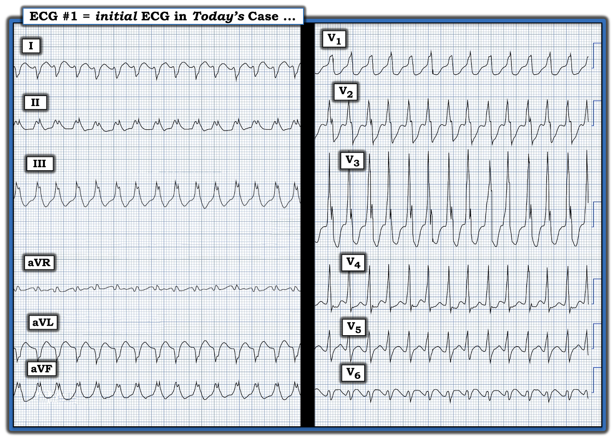
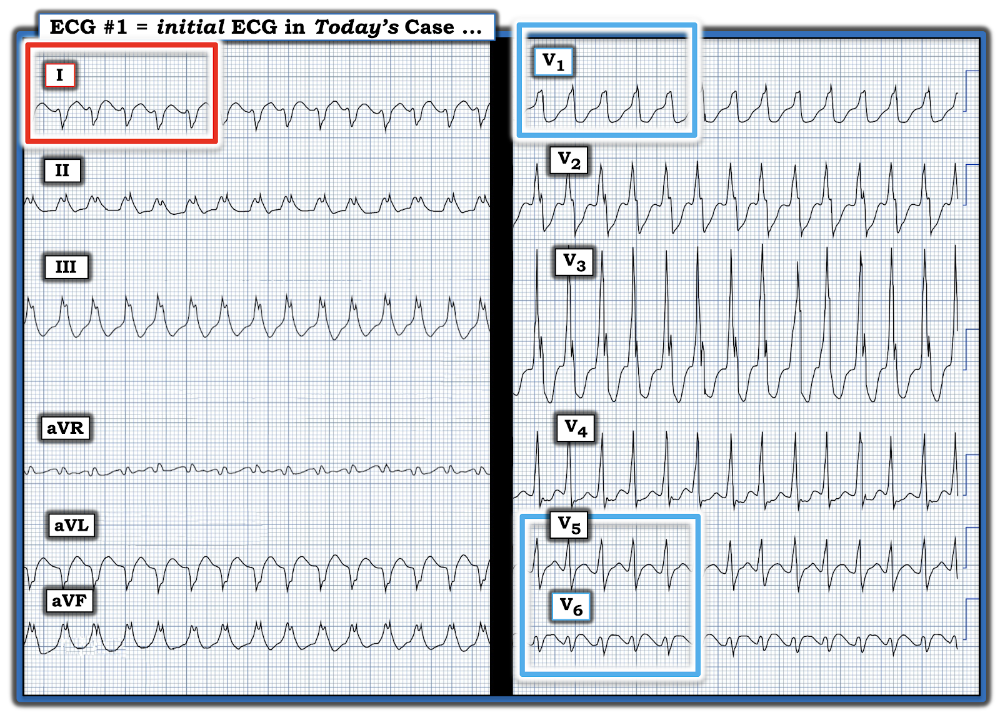
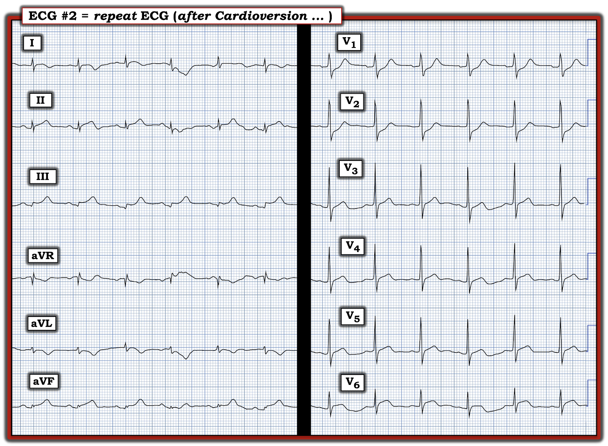
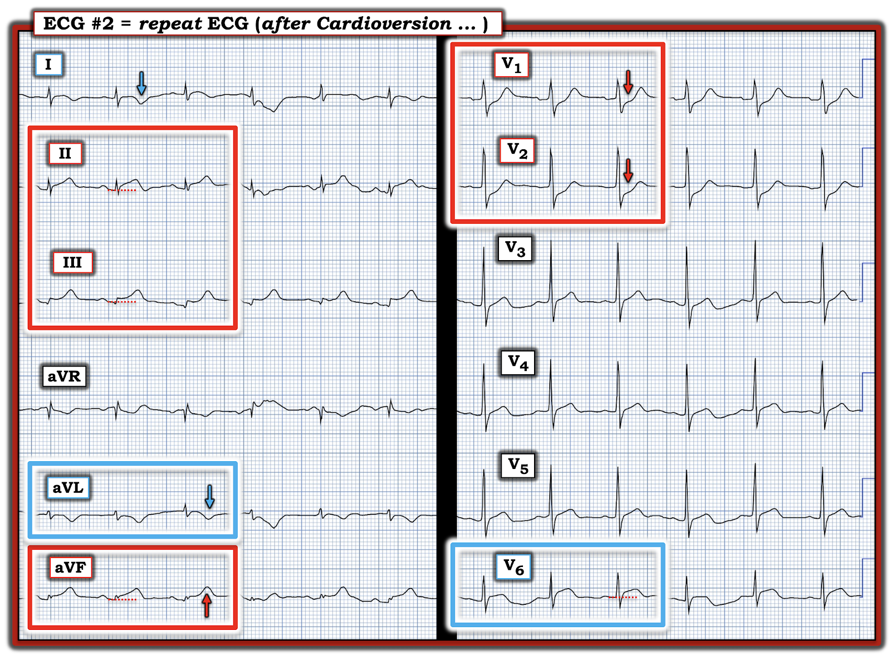

ECG Blog #444 — Đau ngực và SVT dẫn truyền lệch hướng?
Điện tâm đồ ở Hình-1 — được ghi ở một bệnh nhân nam lớn tuổi bị “CP” (đau ngực – Chest Pain) trong suốt 2 ngày qua. Huyết áp = 80/50 mm/Hg. Đã thử tiêm tĩnh mạch Adenosine 6 mg nhưng không đáp ứng.
CÂU HỎI:
- BẠN sẽ diễn giải điện tâm đồ này thế nào?
- Suy nghĩ của bạn về cách xử trí tối ưu?


Suy nghĩ Ban đầu của TÔI về Điện tâm đồ Hôm nay:
Điện tâm đồ ở Hình-1 — cho thấy thứ mà ban đầu tôi nghĩ là một WCT đều (nhịp nhanh QRS rộng – Wide-Complex Tachycardia) với tần số ~180 lần/phút, không có dấu hiệu rõ ràng của hoạt động nhĩ.
- Suy nghĩ ban đầu của tôi là, về mặt thống kê — chỉ cần biết rằng bệnh nhân nam lớn tuổi này đến viện với một nhịp WCT trông có vẻ đều, và không có dấu hiệu rõ ràng của hoạt động nhĩ — thì khả năng nhịp ở Hình-1 là VT (nhịp nhanh thất – Ventricular Tachycardia) là ít nhất 80%.
- Xem kỹ hơn điện tâm đồ ở Hình-1 — hình dạng QRS không giống bất kỳ dạng rối loạn dẫn truyền nào đã biết vì: i) Mặc dù phức bộ QRS dương hoàn toàn ở chuyển đạo V1 có thể là một dạng RBBB (blốc nhánh phải – Right Bundle Branch Block) — nhưng hình dạng vô định hình của phức bộ V1 này (tức là không hề có dấu hiệu nào của hình dạng ba pha như mong đợi, vốn điển hình cho dẫn truyền kiểu RBBB) — hình dạng vô định hình này của QRS ở chuyển đạo V1 nghiêng về VT (trong hình chữ nhật màu XANH ở Hình-2); — ii) QRS gần như âm hoàn toàn ở chuyển đạo I gợi ý trục lệch phải rõ, phù hợp với VT hơn nhiều (trong hình chữ nhật màu ĐỎ ở Hình-2); — iii) Sự chuyển tiếp đột ngột từ dương ưu thế thấy được từ chuyển-đạo-V1-cho-đến-chuyển-đạo-V5 — sang âm ưu thế xuất hiện đột ngột ở chuyển đạo V6 rất ủng hộ VT (trong hình chữ nhật màu XANH còn lại); — và, iv) Nét khởi đầu của QRS ở nhiều chuyển đạo diễn ra chậm (đặc biệt là các sóng r nhỏ khởi đầu quá rộng ở chuyển đạo I và V6) — khử cực khởi đầu của QRS chậm ở nhiều chuyển đạo gợi ý nguồn gốc trong cơ thất (tức là xa hệ thống dẫn truyền — do đó nhiều khả năng là VT nhất).
- Tổng hợp tất cả lại (tức là xét đến tuổi cao của bệnh nhân này và việc hoàn toàn không giống bất kỳ dạng rối loạn dẫn truyền nào đã biết) — lúc này tôi ước tính khả năng thống kê của VT là trên 90%.
ĐIỀU CỐT LÕI: Mặc dù tôi chưa chắc chắn 100% về căn nguyên của nhịp ban đầu hôm nay — điều chắc chắn là cần điều trị ngay lập tức!
- Với khả năng 90+% nhịp ở Hình-2 là VT — chúng ta cần coi là VT cho đến khi chứng minh được điều ngược lại (và điều trị bệnh nhân tương ứng!).
- Như đã nêu ở trên — đã thử 1 liều Adenosine nhưng không thành công. Dù vậy — đây không phải là bệnh nhân mà tôi sẽ thử dùng Adenosine vì: i) Mặc dù Adenosine có thể chuyển nhịp thành công một số dạng VT vô căn (tức là VT ở bệnh nhân không có bệnh tim nền — như đã bàn trong ECG Blog #197) — Adenosine không hiệu quả trong điều trị VT do thiếu máu cục bộ — thứ mà bệnh nhân lớn tuổi có hình dạng QRS bất thường rõ rệt này gần như chắc chắn mắc phải; ii) Adenosine không phải là một thuốc hoàn toàn vô hại (Xem ECG Blog #402 về ưu và nhược điểm của việc dùng Adenosine); và, iii) Bệnh nhân này có triệu chứng. Ông ấy cũng có vẻ không ổn định huyết động (tức là bệnh nhân đã đau ngực 2 ngày — tần số của nhịp ban đầu ở Hình-2 nhanh — và huyết áp của bệnh nhân vào lúc ghi nhịp này = 80/50 mm Hg.).
- Thay vào đó — có chỉ định sốc điện chuyển nhịp ngay lập tức! Vì bệnh nhân này có triệu chứng (cũng như không ổn định huyết động) — nên nhịp này có căn nguyên trên thất hay là VT không còn quan trọng nữa, vì dù là gì đi nữa — sốc điện chuyển nhịp ngay lập tức vẫn rõ ràng có chỉ định.
===========================
ĐIỂM THEN CHỐT (PEARL) #1: Tôi xin nhấn mạnh rằng mặc dù phần bàn luận từng bước ở trên về cách tôi đánh giá điện tâm đồ #1 có vẻ phức tạp — nhưng tổng thời gian để tôi đi đến kết luận khả năng VT lớn hơn 90% là chưa đến 10 giây. Với luyện tập — việc này sẽ trở nên dễ dàng. Nhưng với những ai muốn một cách tiếp cận "đơn giản hơn"" — Hãy xem xét những điều sau (mà tôi ôn lại bên dưới trong PHẦN BỔ SUNG):
- Bệnh nhân này đang có một nhịp nhanh rộng, "trông xấu xí" và có vẻ đều, không có sóng P.
- Theo Hình-5, -6 và -7 bên dưới trong PHẦN BỔ SUNG — có trục lệch phải rõ — QRS gần như âm hoàn toàn ở chuyển đạo V6 — và QRS dương vô định hình ở chuyển đạo V1 chẳng giống chút nào với hình ảnh RBBB điển hình, vốn đặc trưng bởi dạng ba pha (phức bộ rSR') ở chuyển đạo V1.
- Thêm vào đó — bệnh nhân lớn tuổi — đang bị đau ngực — và tụt huyết áp (80/50 mm Hg). Vì vậy, nhịp này phải được coi là VT cho đến khi chứng minh được điều ngược lại — và — cần sốc điện chuyển nhịp ngay lập tức (bất kể nhịp này cuối cùng là gì).


THÚ NHẬN: Ban đầu tôi nghĩ nhịp WCT ở Hình-2 là đều. Hóa ra nhịp ban đầu hôm nay không đều (Điều này có lẽ thấy rõ nhất ở chuyển đạo V3 — gợi ý một kiểu đều gần như luân phiên giữa một khoảng R-R dài hơn một chút xíu với một khoảng R-R ngắn hơn một chút).
- Khác với VT đa dạng mà theo định nghĩa là không đều hoàn toàn — VT đơn dạng thường là một nhịp khá (nếu không nói là hoàn toàn) đều (Xem ECG Blog #231 về các dạng VT khác nhau).
- Phần lớn các trường hợp khi một nhịp WCT đơn dạng không đều — thì nhịp đó sẽ có căn nguyên trên thất kèm hoặc blốc nhánh có từ trước hoặc một dạng dẫn truyền lệch hướng liên quan tần số.
- ĐIỂM THEN CHỐT (PEARL) #2: Dù đã nói như trên — vẫn có 2 ngoại lệ thường gặp đối với nhận định chung rằng VT đơn dạng thường là một nhịp đều. Các ngoại lệ này là KHI: i) Có một giai đoạn "khởi động" (warm-up) gồm các nhát thất chậm hơn và tăng tốc dần trước khi VT trở nên đều; — hoặc, ii) Có một giai đoạn "hạ nhiệt" (cool-down) trong đó sau loạt VT đều, tần số của VT chậm dần cho đến khi loạt VT cuối cùng chấm dứt (các khái niệm này được minh họa và giải thích kỹ lưỡng trong ECG Blog #417).
- ĐIỂM THEN CHỐT (PEARL) #3: Ngoài giai đoạn "khởi động" và/hoặc "hạ nhiệt" ngay trước hoặc ngay sau một loạt VT đơn dạng đều — Đôi khi, VT đơn dạng có thể chỉ đơn giản biểu hiện một khoảng R-R thay đổi (Oreto và cs. — Am Heart J 124(6):1506-11, 1992). Các lý do có thể gây thay đổi khoảng R-R trong VT đơn dạng gồm: i) Có 2 vòng vào lại của VT dùng chung một đường ra; hoặc, ii) Thay đổi tốc độ dẫn truyền qua vòng vào lại.
- Điều cốt lõi — Phần lớn các trường hợp (nhưng không phải luôn luôn) — VT đơn dạng sẽ đều. Nhưng nếu một loạt nhát rộng không có sóng P mà không đều, thì riêng dấu hiệu này không nhất thiết loại trừ khả năng VT.
============================
CA BỆNH TIẾP DIỄN:
Sau 1 liều Adenosine — đã tiến hành sốc điện chuyển nhịp đồng bộ. Kết quả được trình bày ở Hình-3.
CÂU HỎI:
- BẠN sẽ diễn giải điện tâm đồ sau sốc điện chuyển nhịp thế nào?


Điện tâm đồ Sau Sốc Điện Chuyển Nhịp ở Hình-3:
Mặc dù có nhiều nhiễu ở Hình-3 khiến việc đánh giá khó khăn hơn — bản ghi sau sốc điện chuyển nhịp này vẫn diễn giải được:
- "Tin tốt" — là nhịp xoang đã được phục hồi, thể hiện bởi sự hiện diện của các sóng P dương với khoảng PR cố định và bình thường ở chuyển đạo II.
- Tất cả các khoảng (PR-QRS-QTc) và trục mặt phẳng trán đều bình thường. Không có lớn buồng tim.
- Có điện thế thấp ở cả 6 chuyển đạo chi (Sẽ nói thêm về điều này ngay sau đây).
Về
Thay đổi Q-R-S-T:
- Có sóng Q ở chuyển đạo III.
- Tăng tiến sóng R không bình thường. Thay vào đó — sóng R đã chiếm ưu thế (sóng R>S) ngay ở chuyển đạo V1. Như đã ôn lại trong ECG Blog #81 — dấu hiệu Sóng R cao ở Chuyển đạo V1 cần gợi ý xem xét 6 bệnh cảnh có thể (Sẽ nói thêm về nguyên nhân có khả năng gây sóng R cao ở V1 trong ca hôm nay ngay sau đây).
Về Thay đổi Sóng ST-T (Xem Hình-4):
- Mặc dù có nhiều thay đổi hình dạng sóng ST-T liên quan đến nhiễu — cả 3 chuyển đạo thành dưới (trong các hình chữ nhật màu ĐỎ ở chuyển đạo II,III,aVF) đều cho thấy ST chênh lên tối cấp, trong đó sóng T ở các chuyển đạo này lấn át hẳn các phức bộ QRS nhỏ xíu.
- Việc ST chênh lên ở các chuyển đạo thành dưới này là "thật" và cấp tính — được xác nhận bởi hình ảnh ngược lại kiểu soi gương là sóng T đảo ngược "quá đầy đặn" (hypervoluminous) ở các chuyển đạo bên cao I và aVL (theo các mũi tên màu XANH ở các chuyển đạo này).
Ở các Chuyển đạo Trước tim:
- "Mắt" tôi ngay lập tức bị thu hút bởi ST chênh xuống rõ rệt ở chuyển đạo V1,V2 (trong hình chữ nhật màu ĐỎ) — với 2 chuyển đạo trước tim đầu tiên này có sóng R cao (ưu thế) không tương xứng.
- Cuối cùng — chuyển đạo trước tim bên V6 cho thấy ST chênh lên dạng vòm (coving) (trong hình chữ nhật màu XANH ở chuyển đạo này).
============================
Tổng Hợp Lại Tất cả:
Cần nhớ rằng bệnh nhân hôm nay vừa được sốc điện chuyển nhịp thoát khỏi VT bền bỉ — chúng ta cần suy xét TẠI SAO bệnh nhân này lại có thể bị VT?
- ĐIỂM THEN CHỐT (PEARL) #4: Như đã đề cập ở trên — dấu hiệu Sóng R cao ở Chuyển đạo V1 cần gợi ý xem xét DANH SÁCH sau đây gồm 6 Nguyên nhân thường gặp nhất: i) WPW; ii) RBBB; iii) RVH; iv) Nhồi máu cơ tim thành sau; v) HCM (bệnh cơ tim phì đại – Hypertrophic CardioMyopathy); và, vi) Biến thể bình thường — là chẩn đoán loại trừ (Xem ECG Blog #81 để biết thêm về vấn đề này).
- Lần lượt xét DANH SÁCH trên — phức bộ QRS hẹp loại trừ WPW và RBBB — không có dấu hiệu nào gợi ý lớn buồng tim — siêu âm tim sẽ loại trừ HCM — và điện tâm đồ #2 rõ ràng không phải là biến thể bình thường. Còn lại nhồi máu cơ tim thành sau là nguyên nhân nhiều khả năng nhất gây sóng R cao ở Chuyển đạo V1 của điện tâm đồ #2.
- ĐIỂM THEN CHỐT (PEARL) #5: DANH SÁCH các nguyên nhân gây điện thế thấp được ôn lại trong ECG Blog #272 — trong đó cung lượng tim giảm do "choáng" cơ tim (myocardial stunning) kèm theo một nhồi máu cơ tim cấp diện rộng là điều quan trọng cần cân nhắc trong ca hôm nay.
- ĐIỀU CỐT LÕI: Điện tâm đồ ở Hình-4 cho thấy một STEMI dưới-sau-bên lan rộng. Vùng chuyển tiếp sớm ở các chuyển đạo trước tim (tức là sóng R đã chiếm ưu thế ngay ở chuyển đạo V1) — là tương đương soi gương của sóng Q, và phù hợp với nhồi máu thành sau. Nếu điện thế các chuyển đạo chi giảm mạnh là một dấu hiệu mới — thì nhiều khả năng nhất nó phản ánh cung lượng tim giảm do nhồi máu lan rộng. Rõ ràng có chỉ định thông tim sớm. Đáng tiếc — không có thêm thông tin theo dõi về ca hôm nay.


==================================
Lời cảm ơn: Xin cảm ơn Rajeesh R Pillai (từ Kollam, Ấn Độ) đã cung cấp ca bệnh và các bản ghi này.
==================================

==============================
PHẦN BỔ SUNG (23/8/2024):
- Tôi đã trích lại bên dưới từ ECG Blog #196 — một số hình hữu ích cùng với Pearl Audio của tôi về đánh giá nhịp WCT đều.


ECG Media PEARL #13a (Audio 12:20 phút) — ôn lại “Quan điểm của tôi” về đánh giá WCT đều (nhịp nhanh QRS rộng – Wide-Complex Tachycardia) khi không có sóng P xoang — kèm các mẹo để phân biệt VT với SVT kèm hoặc BBB có từ trước hoặc dẫn truyền lệch hướng.
==============================
Các bài ECG Blog liên quan khác đến Ca hôm nay:
- ECG Blog #185 — Ôn lại Hệ thống diễn giải Nhịp của tôi, theo Cách tiếp cận Ps, Qs & 3R.
- ECG Blog #205 — Ôn lại Cách tiếp cận Hệ thống của tôi trong diễn giải điện tâm đồ 12 chuyển đạo.
- ECG Blog #210 — Ôn lại phương pháp Cách-Một-Nhát (hoặc Cứ-Mỗi-Ba-Nhát) để ước tính tần số tim nhanh — và bàn về một ca khác có nhịp WCT đều.
- ECG Blog #220 — Ôn lại cách tiếp cận WCT đều ( = nhịp nhanh QRS rộng – Wide-Complex Tachycardia).
- ECG Blog #196 — Một Ca khác có nhịp WCT đều.
- ECG Blog #263 và Blog #283 — và Blog #361 — Thêm các nhịp WCT ...
- ECG Blog #197 — Ôn lại khái niệm VT vô căn, trong đó VT phân nhánh (fascicular VT) là một trong 2 thể thường gặp nhất.
- ECG Blog #346 — Ôn lại một ca VT đường ra thất trái (LVOT VT) (một thể VT vô căn ít gặp hơn).
- ECG Blog #204 — Ôn lại chẩn đoán điện tâm đồ các blốc nhánh (RBBB/LBBB/IVCD).
- ECG Blog #203 — Ôn lại chẩn đoán điện tâm đồ về Trục, các blốc phân nhánh — và các blốc hai phân nhánh.
- ECG Blog #211 — TẠI SAO xảy ra dẫn truyền lệch hướng?
- ECG Blog #42 — Ôn lại các tiêu chuẩn để phân biệt VT với dẫn truyền lệch hướng.
- Phân tích từng bước một ca nhịp WCT đều ở một phụ nữ ngoài 80 tuổi — Xem Bình luận của tôi trong bài đăng ngày 5 tháng 5 năm 2020 trên Dr. Smith’s ECG Blog.
- Một ca khác có nhịp WCT đều ở một phụ nữ ngoài 60 tuổi — Xem Bình luận của tôi ở cuối trang trong bài đăng ngày 15 tháng 4 năm 2020 trên Dr. Smith’s ECG Blog.
- Ôn lại các VT vô căn (tức là VT phân nhánh; RVOT VT và LVOT VT) — Xem Bình luận của tôi ở cuối trang trong bài đăng ngày 7 tháng 9 năm 2020 trên Dr. Smith’s ECG Blog.
- Ôn lại một loại VT khác (VT đa hình thái – Pleomorphic VT) — Xem Bình luận của tôi trong bài đăng ngày 1 tháng 6 năm 2020 trên Dr. Smith’s ECG Blog.
=================================
- ECG Blog #193 — Ôn lại những điều cơ bản để dự đoán động mạch "thủ phạm" (cũng như ôn lại lý do tại sao thuật ngữ "STEMI" — nên được thay bằng "OMI" = nhồi máu cơ tim do tắc (Occlusion-based MI)).
=================================
- BẤM VÀO ĐÂY — để xem 6 Video điện tâm đồ mới của tôi (về diễn giải Nhịp — diễn giải điện tâm đồ 12 chuyển đạo với các Ca bệnh minh họa cho chẩn đoán điện tâm đồ OMI cấp).
- BẤM VÀO ĐÂY — để nghe 2 Podcast điện tâm đồ mới của tôi (về các Sai sót khi diễn giải điện tâm đồ & Nhịp — và — các Sai sót khi đánh giá OMI cấp).
=================================
- Nhận diện sóng T tối cấp — các nhóm chuyển đạo — một OMI (dù không phải STEMI) — Xem Bình luận của tôi ở cuối trang trong bài đăng ngày 8 tháng 11 năm 2020 trên Dr. Smith's ECG Blog.
- ECG Blog #351 — Blog #285 — Blog 246 — Blog #80 — để xem các ví dụ về OMI thành sau cấp.